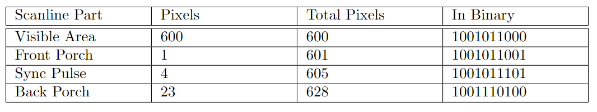
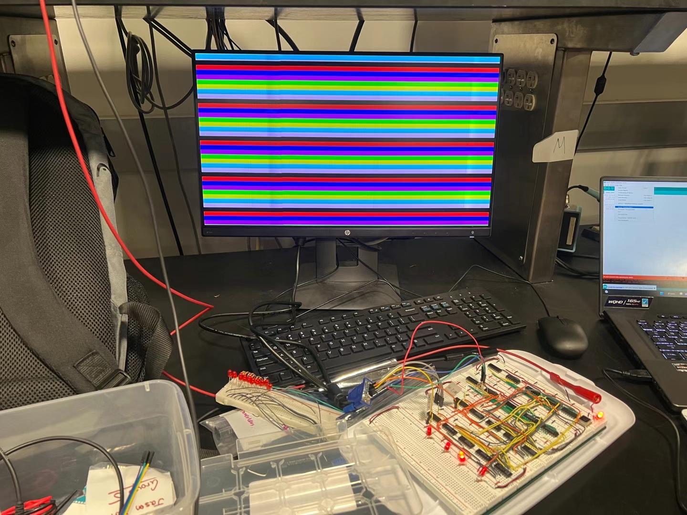
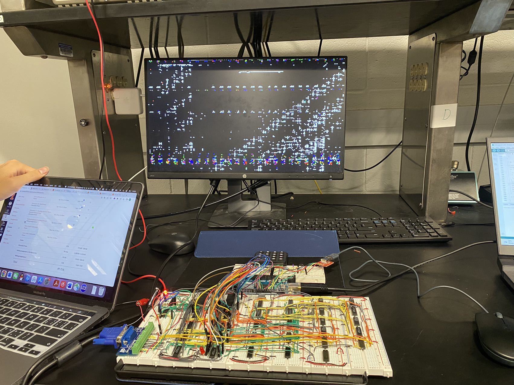

TTL Chip-Based VGA Driver
A Breadboard-based VGA Driver that supports live editing of the image displayed on the monitor.
In my freshman year, my team and I made a VGA driver out of breadboards and TTL chips for our class project. In this post, I will give you a quick rundown of what this project is about!
Please note that this page works as a summary of the project and doesn’t include all the information about this project. If you are interested in the technical details, please refer to the report for a detailed explanation. Credit for this project also goes to my teammates Phillip Chen (pxchen2@illinois.edu), Tony Liu (zikunl2@illinois.edu), and Hanwen Zhang (hanwenz7@illinois.edu). If there are any conflicts between this summary and the report, please refer to the report as the correct version.

1. Introduction
I have been wondering how computers work since I was a kid. After taking ECE 120 (Introduction to Computing), many of my questions were answered regarding generally what’s in a computer. However, how a computer displays stuff remained a mystery to me. To unveil this mystery, I decided to look up a very classic way of displaying graphics: VGA. Upon some research, I found the VGA signal format and Ben eater’s VGA driver using many ttl chips that can display static images, which eventually led to this project here.
This circuit takes two user inputs (a keyboard and a mouse) and displays the input on the monitor. The mouse will draw lines on the screen while the keypad will generate shapes around the position of the curser. A block diagram is shown below.

2. Some background information
2.1 Keypad
We considered using a whole keyboard and displaying characters on the screen at the beginning. Such an approach would require a very large font ROM to store the drawing of each character, so we abandoned that idea and switched to a simpler approach.
We used a 4x4 keypad, and each key on the keypad has a different function. For example, the “*” key will fill the whole screen with a solid color. We can also select what color to use through the A and C keys. To keep our project simple, we used 2-bit encoding for each color (R, G, and B) channel, so there are, in total, 64 different possible color outputs.
The circuit inside of the keypad is a 4x4 scanning matrix that, when a button is pressed, connects an R channel and a C channel shown in Fig. 3, telling the microcontroller it is connected to that a key is pressed. Again, a detailed explanation can be found in the lab report.

2.2 Mouse
We used a standard USB mouse that supports PS/2 for this project. While moving this mouse, it would move a cursor on the monitor and while holding the left key, it would draw colored pixels through the path it moved through.

There are four pins on the connector as shown in Figure 4. We decided to communicate with the mouse through PS/2 Protocol because it is much simpler than USB. In this case, the D- pin will carry its data signal while the D+ pin carries its clock signal. Like the keypad, we used a microcontroller to decode the signals from the mouse.
2.3 Microcontroller
The microcontroller will be responsible for taking the input from both the mouse and the keypad, processing them, and loading drawing data into the memory chip (a 512Kx 8-bit SRAM). We applied an Arduino Mega 2560 Rev3 shown in Figure 5 as the microcontroller for our project mostly due to its large number of I/O pins.

For example, when the clear button is pressed, the Arduino will take that input from the keypad, go through all the memory locations we used in the memory chip, and set all of them to zero.
2.4 VGA Protocol
The idea behind VGA protocol is inspired heavily by the big old CRT monitors. In them, there is an electron gun that shoots electrons to every pixel, determining what color they are. The electron gun starts at the upper left corner of the screen, goes to the right pixel by pixel, and switches to the next line when it finishes a whole line. The original term “VGA” refers to the 640 x 480 @ 60Hz resolution on a monitor, and here, we are using this word to refer to all signals that use a VGA port.
Note that other than the visible areas we see on the screen, many “hidden” sections should be considered when generating the VGA signal. A breakdown of those areas is shown in Figure 6. The sync pulses (Vertical Sync and Horizontal Sync) are especially important in this application.

The size of each section is determined by the signal resolution. For example, for an 800 x 600 @ 60Hz signal, the required horizontal and vertical timing information is shown in Figure 7.

To simplify our project, we generated an 800 x 600 @ 60Hz signal but cut the width to 200, leading to the horizontal and vertical timing shown in Figures 8 and 9, respectively:


As long as the horizontal and vertical sync pulses match the timing specification shown in Figure 7, the monitor will recognize it as a valid VGA signal.
2.5 Video Memory
The video memory, as the name suggests, stores the content to display on the monitor. Sadly, we weren’t able to find any available dual-port memory chip that would easily fit on a breadboard, so we went for single-port SRAMs as our video memory unit.
One thing worth mentioning is that we tried to do double buffering. As demonstrated by Figure 10, the main idea behind double buffering is that the monitor will display video memory in Buffer A that is fully generated by the graphics card while the graphics card is writing to Buffer B. After the monitor finishes reading from Buffer A, it starts reading from Buffer B while the graphics card writes the new frame to Buffer A. 
This approach could largely prevent problems like screen tearing and have a smoother display. However, due to time constraints, we did not fully finish this part in software although it is supported by hardware.
3. Implementation
3.1 VGA Signal Generation
A simple way to generate a VGA signal that matches the timing specification mentioned above is with counters. A binary counter (We specifically used SN74LS161A) simply counts up in binary representation (0000, 0001, 0010, and so on) when given a clock signal. We used NAND gates to detect if we should toggle the sync pulses at the correct pixel and applied two flip-flops to toggle the sync pulses.
For example, to match the horizontal timing requirements, we would have four 8-input NAND gates to detect if the current pixel is in the Visible Area (pixel 0 - 199), Front Porch (pixel 200 - 209), Sync Pulse (pixel 210 - 241), or Back Porch (pixel 242 - 263). At pixel 210, a flip-flop will be toggled and toggled again at pixel 241 to generate the horizontal sync pulse. The counters will reset after it reaches 264 and start counting from 0 up again as it finishes a whole line. The detailed schematics can be found in Figure 7 and Figure 8 in the lab report.
3.2 From Input to Video Memory
As mentioned before, the input from both the keypad and the mouse is processed by the Arduino. While it is relatively easy to write the driver for the keypad, processing the input from the mouse is rather difficult and was not the main focus of this project. Therefore, we used an open-source library written by getis to read correct inputs from the mouse.
When reading from the video memory, the address pins of the SRAM are connected to the counters from the VGA signal generation unit (explained in Section 3), and the output is connected to the VGA connector. When writing into it, we used a few MUXes to make the address pins connected to the Arduino only and drive the input pins also by the Arduino. Then, we used a nested for loop in software to load all video data into the SRAM.
3.3 From Video Memory to Monitor
VGA connectors usually have 15 pins, but there are only 5 pins that are not ground and important to us: the RGB signal, Horizontal Sync, and Vertical Sync. As mentioned in Section 2.4, as long as the sync pulses have the correct length and timing, the monitor will recognize the signal as a valid VGA signal. To that end, we can simply connect the sync pulses from the flip-flop (mentioned in Section 3.1) to the HSync and VSync signals directly.
Displaying colored pixels is slightly more complicated. While testing, we simply connected the R, G, and B signals of the VGA connector to the first bit of the corresponding signal for the video memory (we have 2-bit storage for each color). The approach to display multiple colors is described in the lab report in detail.
4. Progress
4.1 VGA Generation Circuit
All of the work to this point was done in my first semester (Fall 2022). At the end of this semester, we were able to generate a valid VGA signal to be recognized by the monitor. By connecting the R, G, and B signals to certain output pins of the counter directly, we can easily display color strips on the monitor as shown in Figure 11.

4.2 Video Memory with Input and Output
We did manage to interact with the memory through the Arduino and were able to read from the memory, clear the screen, and set the screen to solid colors. The cover of this page (Figure 1) shows the circuit displaying uninitialized memory content from the SRAM as the SRAM does not save its memory content after power cycles.
However, we met some challenges trying to display certain shapes that we wanted. As shown in Figure 12, we tried to draw a blue square at coordinate (0,0) on the screen, and the square did not exactly ended up on the top-left corner of the screen. Also, some of its pixels moved to spaces outside of the square.

Similar behavior occurs when we tried to draw the input from the mouse. While trying to draw a diagonal line across the bottom-right corner of the screen, the line seems to be scattered as shown in Figure 13.

We suspected that the mapping of the input address into the memory chip may be different from the mapping of the output address on the monitor.
5. Conclusions
5.1 Reflection
From a hardware perspective, we did finish the display circuit. We were able to read/write data from and into the memory chip and were very close to having a working circuit. We generally followed our timeline, but the debugging phase took much longer than we expected. A lesson learned for us was that we could definitely have made the timeline more compact and left more time for debugging.
Again, for more detailed technical report, code we used, and other related information, please refer to the report!
5.2 Extensions of this Project
After debugging this circuit, we essentially have a VGA driver that can put the output of an Adruino onto a monitor. This opens up vast opportunities like programming a Tetris in the Arduino and play Tetris with a VGA monitor. If anyone is interested in continuing this project, please let me know through email (zexuany2@illinois.edu) as I am currently (Spring 2024 Semester) helping another team to achieve a similar project!
5.3 Significance
This project helped us understand the basic logic behind a VGA monitor and how to generate VGA signals. It also taught us how to interact with microcontrollers and memory chips. The knowledge learned here proven to be very useful for higher-level classes like ECE 385 (Digital Hardware Laboratory) which we would interact a lot with VGA signals. It has been a fun project with a considerable amount of time input on the display circuit side. We learned a lot both in a technical sense and about setting up timelines and project management.
6. Works Cited
1 B. eater, ”Let’s build a video card!”, Eater.net, 2022. [Online]. Available: https://eater.net/vga.[Accessed:25- Sep- 2022].
2 B. Eater, The world’s worst video card?. 2019.
3 B. Eater, the World’s worst video card? The exciting conclusion. 2019.
4 jdh, I built my own graphics card. 2021.
5 W. Green, Project F. projectf.io, 2022 [Online]. Available: https://projectf.io/posts/video-timings-vga-720p-1080p/
6 ABRACON, LLC ”HALF SIZE DIP LOW VOLTAGE 5.0V CRYSTAL CLOCK OSCILLATOR,” ACH-10.000MHZ-EK datasheet [revised Nov. 2016]
7 Texas Instruments, ”Synchronous 4-Bit Counters,” SN74LS161AN datasheet, Oct. 1976 [revised Mar.1988]
8 Texas Instruments, ”SNx400, SNx4LS00, and SNx4S00 Quadruple 2-Input Positive-NAND Gates,” SN74LS00 datasheet, Dec. 1983 [revised May 2017]
9 Texas Instruments, ”8-Input Positive-NAND Gates,” SN74LS30, Dec. 1983 [revised Mar. 1988]
10 Texas Instruments, ”Hex Inverters,” SN74LS04, Dec. 1983 [revised Jan. 2004]
11 Desai, S. (2022, June 6). VGA pinout. Hardware connector pinouts and cables circuits wirings. Retrieved December 6, 2022, from ”https://pinoutguide.com/Video/VGA15-pinout.shtml ”
12 SECONS Ltd. (2008). SVGA signal 800 x 600 @ 60 hz timing. Retrieved December 6, 2022, from http://tinyvga.com/vga-timing/800x600@60Hz
13 Beneater (2018) Beneater/EEPROM-programmer: Arduino EEPROM programmer, GitHub. MIT. Available at: https://github.com/beneater/eeprom-programmer (Accessed: December 6, 2022).
14 Components101, “4x4 keypad module,” Components101, 2021. [Online]. Available: https://components101.com/misc/4x4-keypad-module-pinout-configuration-features-datasheet. [Accessed: 03-Feb-2023].
15 Components101, ”USB-A-Jack-Pinout” Components101, 2021. [Online]. Available: https://components101.com/sites/default/files/component-pin/USB-A-Jack-Pinout.png [Accessed: 04-Feb-2023].
16 Getis, “Getis/arduino-PS2-mouse-handler: PS2 mouse handler library for arduinos,” GitHub, 25-Oct-2021. [Online]. Available: https://github.com/getis/Arduino-PS2-Mouse-Handler. [Accessed: 01-Apr-2023].
17 PixArt Imaging Inc., “PAW3515DB DS Simple 1.0 - epsglobal,” PAW3515DB SERIES USB OPTICAL MOUSE SINGLE CHIP, Apr-2013. [Online].Available: https://www.epsglobal.com/Media-Library/EPSGlobal/Products/files/pixart/PAW3515DB.pdf ?ext=.pdf. [Accessed: 04-Feb-2023].
18 Oracle, “Double Buffering and Page Flipping,” Java Documentation, “https://docs.oracle.com/javase/tutorial/extra/fullscreen/doublebuf.html”. [Accessed: 05-Feb-2024].